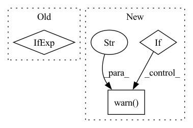

Pattern ID :13976
Before Change
self.save_hyperparameters() // type: ignore[operator]
self.hyperparams = cast(Dict[str, Any], self.hparams)
self.ignore_zeros = None if kwargs["ignore_zeros"] else 0
self.config_task()
After Change
self.save_hyperparameters() // type: ignore[operator]
self.hyperparams = cast(Dict[str, Any], self.hparams)
if not isinstance(kwargs["ignore_index"], (int, type(None))):
raise ValueError("ignore_index must be an int or None")
if (kwargs["ignore_index"] is not None) and (kwargs["loss"] == "jaccard"):
warnings.warn(
"ignore_index has no effect on training when loss="jaccard"" ,
UserWarning,
)
self.ignore_index = kwargs["ignore_index"]
self.config_task()
self.train_metrics = MetricCollection(In pattern: SUPERPATTERN
Frequency: 3
Non-data size: 3
Instances Fragment ID: 46456356
Project Name: microsoft/torchgeo
Commit Name: c3e11e48b8878576c5bff5cf8e44557b3647f734
Time: 2022-07-02
Author: calebrob6@gmail.com
File Name: torchgeo/trainers/segmentation.py
M Class Name: SemanticSegmentationTask
N Class Name: SemanticSegmentationTask
M Method Name: __init__(1)
N Method Name: __init__(1)
M Parent Class: LightningModule
N Parent Class: LightningModule
M File Name: torchgeo/trainers/segmentation.py
N File Name: torchgeo/trainers/segmentation.py
M Start Line: 92
M End Line: 92
N Start Line: 92
N End Line: 99
Before Change
y[..., 2:4] = (y[..., 2:4] * 2) ** 2 * self.anchor_grid[i] // wh
z.append(y.view(bs, -1, self.no))
return x if self.training else (torch.cat(z, 1), x)
@staticmethod
def _make_grid(nx=20, ny=20):After Change
y[..., 2:4] = (y[..., 2:4] * 2) ** 2 * self.anchor_grid[i] // wh
z.append(y.view(bs, -1, self.no))
if torch.jit.is_scripting():
warnings.warn("YOLO always returns a (outputs, features) tuple in scripting" )
return (torch.cat(z, 1), x)
else:
return self.eager_outputs(torch.cat(z, 1), x)
Fragment ID: 46456357
Project Name: zhiqwang/yolov5-rt-stack
Commit Name: dde6239f776a2ad72f7eaeb809479920b1267d85
Time: 2020-10-04
Author: zhiqwang@outlook.com
File Name: models/yolo.py
M Class Name: Detect
N Class Name: Detect
M Method Name: forward(2)
N Method Name: forward(2)
M Parent Class: nn.Module
N Parent Class: nn.Module
M File Name: models/yolo.py
N File Name: models/yolo.py
M Start Line: 34
M End Line: 52
N Start Line: 52
N End Line: 75
Before Change
cfg.MODEL.WEIGHTS = model_path
if not enforce_cpu:
cfg.MODEL.DEVICE = "cuda" if is_torch_cuda_available() else "cpu"
self.cfg = cfg
After Change
device=None,
):
if enforce_cpu is not None:
warnings.warn(
"Setting enforce_cpu is deprecated. Please set `device` instead." ,
DeprecationWarning,
)
if extra_config is None:
extra_config = []
Fragment ID: 46456358
Project Name: layout-parser/layout-parser
Commit Name: 4ff55fa3062a39ed53849fa467afd1c52378ae41
Time: 2021-09-10
Author: 22512825+lolipopshock@users.noreply.github.com
File Name: src/layoutparser/models/detectron2/layoutmodel.py
M Class Name: Detectron2LayoutModel
N Class Name: Detectron2LayoutModel
M Method Name: __init__(7)
N Method Name: __init__(6)
M Parent Class: BaseLayoutModel
N Parent Class: BaseLayoutModel
M File Name: src/layoutparser/models/detectron2/layoutmodel.py
N File Name: src/layoutparser/models/detectron2/layoutmodel.py
M Start Line: 63
M End Line: 85
N Start Line: 62
N End Line: 93